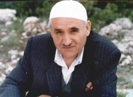

Bayram Yüksel (1931- 1997)

Bediüzzaman'ýn talebelerinden olan Bayram Yüksel, 1931 yýlýnda Bolvadin'in Çoðollu Köyü'nde doðdu. 1945 yýlýnda ilkokulu "pekiyi" derecesiyle bitirince öðretmeni tarafýndan Köy Enstitüsüne gönderilmek istendi; ancak, babasý dindar bir insan olduðundan göndermedi. Bu okullardan mezun olan insanlarýn, dinine ve diyanetine karþý yabancýlaþmasý, halk tarafýndan benimsenmelerine mani teþkil ediyordu. Babasý, Kur'an-ý Kerim'i hýfz etmesini ve öðrenmesini istiyordu.Çok genç yaþta Risale-i Nur'la tanýþarak Bediüzzaman'a talebe oldu (1948). Vatani hizmetini ifa ettiði sýrada Kore Savaþý çýkmýþ olduðundan, Kore'ye gönderilen birliklerimizin içinde yer aldý (1951). Kore Gazisi olarak geri döndü. Bediüzzaman Hazretlerinin vefatýna kadar hizmetinde bulunmaya devam etti (1960).
Bayram Yüksel, gerek Bediüzzaman gerekse Risale-i Nur hizmeti konusunda çok sayýda hatýra nakletti. Uzun süre hizmetin içinde yer aldý. Bediüzzaman'ýn derslerinde bulundu. Bu yüzden aktarmýþ olduðu bilgiler, "birinci elden kaynak" olup çok büyük önem arz etmektedir
Bayram Yüksel, Risale-i Nur'la tanýþtýktan kýsa bir süre sonra henüz daha 16-17 yaþlarýnda iken kendini hapishanede buldu. Afyon Hapishanesi'nde bulunduðu sýrada insanlýk dýþý muamele maruz kaldý. Gardiyanlar, hem kendisine hem de Üstadýna hakaret eder ve tokat atarlardý. Bu durum hem kendisini hem de Üstadýný rencide ediyordu. Bediüzzaman, talebelerine hem teselli verir hem de tutuklu olmalarýna raðmen zamanlarýný en güzel þekilde geçirmelerini saðlardý. Nitekim Bayram Yüksel de hapishanede Kur'an yazýný öðrendi.
Bayram Yüksel, vatani hizmetine Ýskenderun'da baþladý. Ancak, Kore'ye gönderilme kararý çýktý. Kore'de Türk askerlerinin kýrdýrýldýðý iddiasýyla kendisini Suriye'ye kaçýrma teklifi yapýldý. Ancak, kendisi Emirdað'a gidip Bediüzzaman Hazretlerinin fikrini aldý. Habere sevinen Bediüzzaman, "Tamam, ben bir Nur Talebesini Kore'ye göndermek istiyordum. Seni ya da Ceylan'ý düþünmüþtüm. Ýnkar-ý Uluhiyete karþý Kore'ye gitmek lazým" dedikten sonra kendisine, hiçbir zaman boynundan çýkarmamak üzere Cevþen verdi ve hiç korkmamasýný, Ýnayet-i Rabbaniye altýnda olduklarýný söyledi. Bir de Japon baþkumandana verilmek üzere Risaleler verdi.
Bayram Yüksel'in, Kore'de bulunduðu sýrada en çok düþündüðü þey, Üstad'ýn verdiði kitaplarý Japon baþkumandana nasýl ulaþtýracaðý konusu idi. Tokyo'ya tedavi edilmek üzere gönderilmiþ bulunan yaralýlarý alma görevi, kendisinin mensubu bulunduðu tabura verildi ve böylece Tokyo'ya gitme imkaný doðdu. Buraya gelince komutanlarýndan izin aldýktan sonra, Türklerin bulunduðu camiye gitti. Cami müezzini ile tanýþtý. Kendisine çok yakýn ilgi gösterildi. Kazan Türklerinden olan müezzin ve diðerleri, Japon-Rus savaþý sýrasýnda, Bediüzzaman'ýn Ýstanbul'da iken tanýþýp haberleþtiði ve eserlerini gönderdiði komutan tarafýndan Tokyo'ya getirilerek yerleþtirilmiþ ve kendilerine cami yaptýrýlmýþtý. Müezzin, Bediüzzaman'ý Rusya'daki esaretinden beri tanýdýklarýný söyledi. Japon kumandan vefat etmiþ bulunduðundan, Bayram Yüksel eserleri buradaki Türklere verdi.
Bediüzzaman'ýn vefatýndan sonra, iman ve Kur'an hizmetini Ankara ve Isparta'da devam ettirdi. Nur hizmeti, Bediüzzaman ve parmakla sayýlacak kadar az sayýdaki talebeleriyle baþlamýþken, daha sonra ülkenin dört bir yanýna yayýldý. Risale-i Nur Külliyatý, baþta Arapça ve Ýngilizce olmak üzere birçok dile tercüme edildi. Bu hizmete paralel olarak yurt dýþýnda bir çok hizmet merkezi vücuda geldi. Bayram Yüksel de muhtelif zamanlarda yurt dýþýna gitti. Yine böyle bir seyahatten sonra Almanya'dan dönüþlerinde, beraberinde bulunan Ali Uçar ve Mehmet Çiçek'le birlikte, Bulgaristan'da geçirdikleri trafik kazasý sonucu vefat etti (19 Kasým 1997).